在核生成阶段同时使用编码器与解码器特征，用半移位卷积统一插值、拼接、压缩与核生成，是唯一在区域敏感与细节敏感任务上同时取胜的上采样算子。
在核生成阶段同时使用编码器与解码器特征，统一区域保持与细节刻画。
利用卷积线性性把插值、拼接、压缩、核生成统一为一个算子，配套 H2L 与 L2H 实现。
ADE20K +2.73 mIoU，Composition-1K 超 A2U，COCO 接近 CARAFE，NYU 深度估计全部最优。
暂未有上采样算子能在区域敏感与细节敏感任务上同时取得稳定提升。
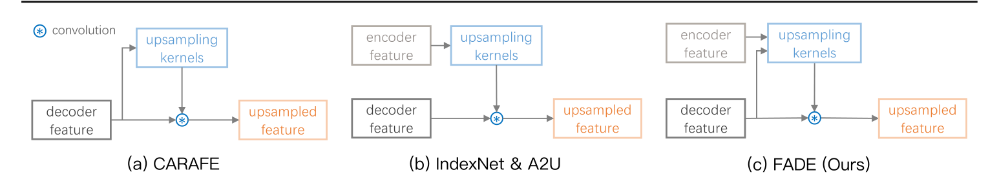
decoder-only 掩码连贯但重建低保真，encoder-only 边界清晰但区域块状（红框：台灯与衣物条纹）——两类特征缺一不可，直接支撑联合核生成设计。
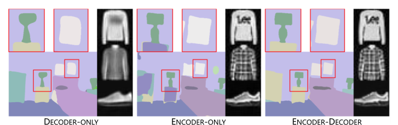
这一失配正是半移位卷积的出发点：把四步统一为一个算子。
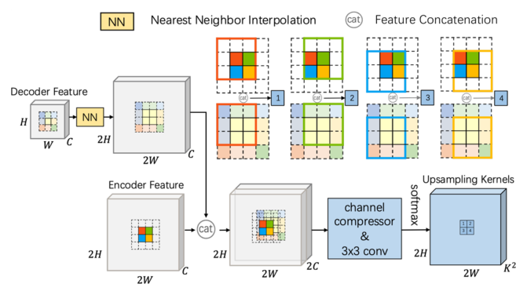
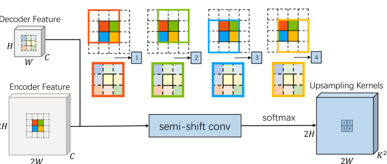
门控的细节补偿对两种核生成方式都有效。
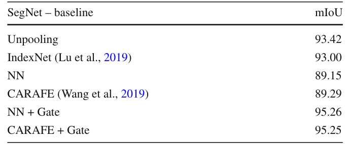
据此用 1×1 卷积、NN 插值与 sigmoid 生成门控图，调制编码器特征与上采样特征。
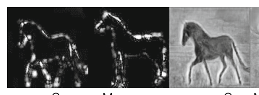
Frefined = Fencoder · G + Fupsampled · (1 − G)
G 为依赖解码器特征生成的门控图。边界点 G=0.7 时以编码器细节为主，区域内部点 G=0.1 时保留解码器语义。
使用建议：逐像素监督任务启用门控，实例级任务（检测、实例分割）关闭门控（G=1）。
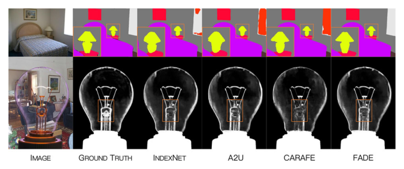
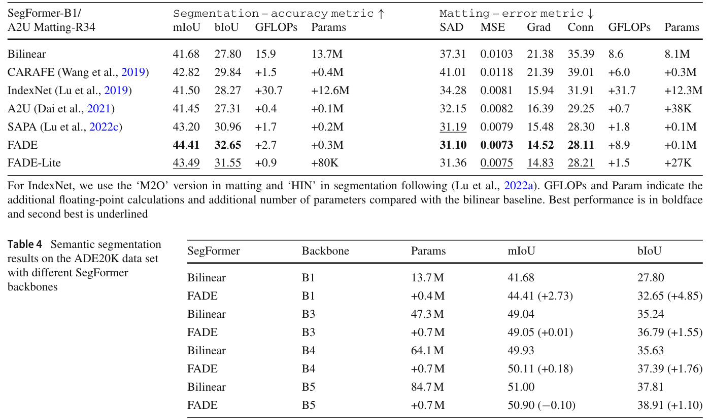
强骨干的特征质量主要修复区域误分类，边界误差仍要靠上采样弥补；实例分割中 FADE (G=1) 与 CARAFE 持平。
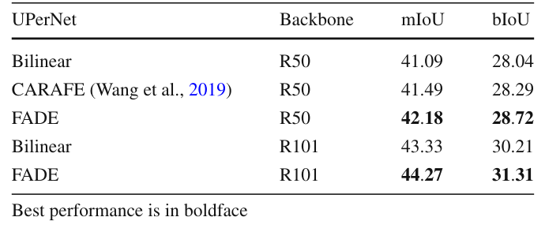
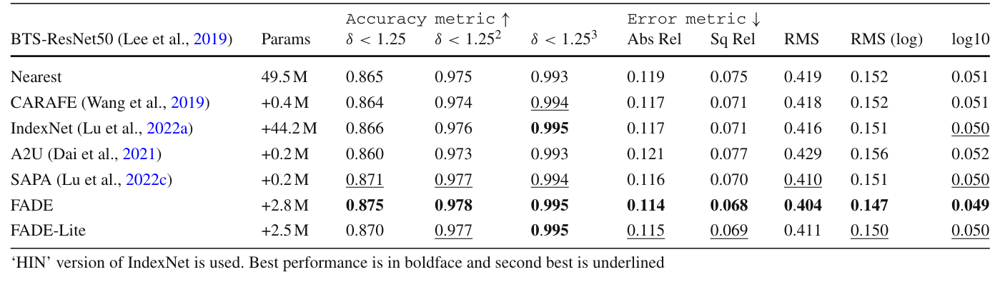
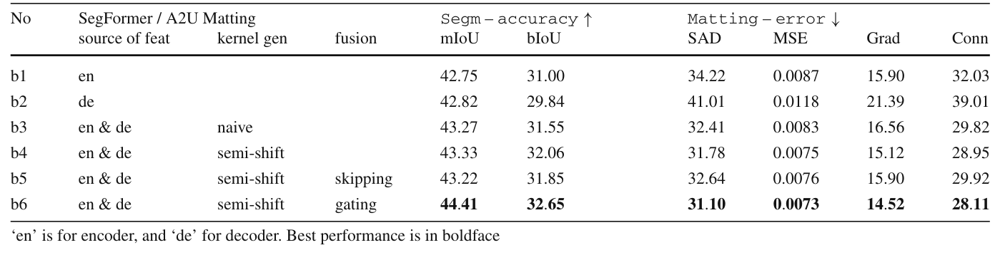
特征图质量可以作为性能好坏的暗示。
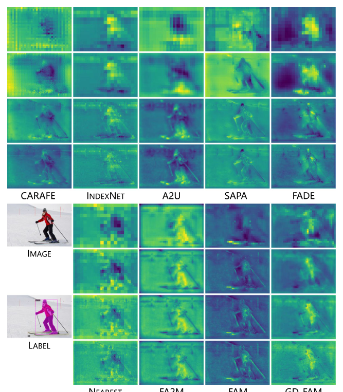
与定量指标互相印证，再次验证算子的任务无关性。
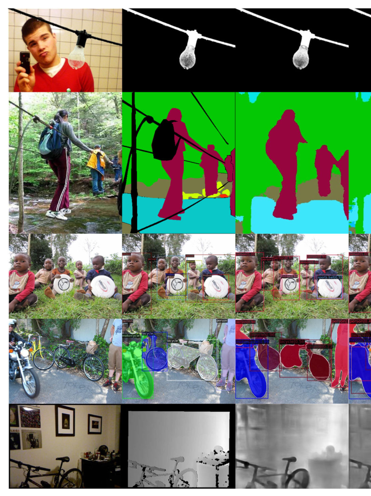
编码器-解码器特征联合核生成，六任务证据链完整。
H2L 与 L2H 两种实现 + FADE-Lite 轻量变体，参数量仅 13K。
给出门控适用边界与强骨干下 mIoU 饱和等差异化结论。